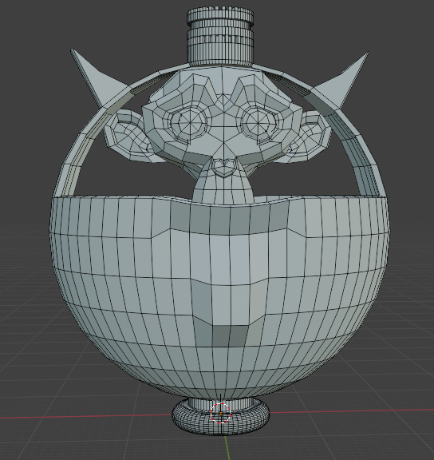
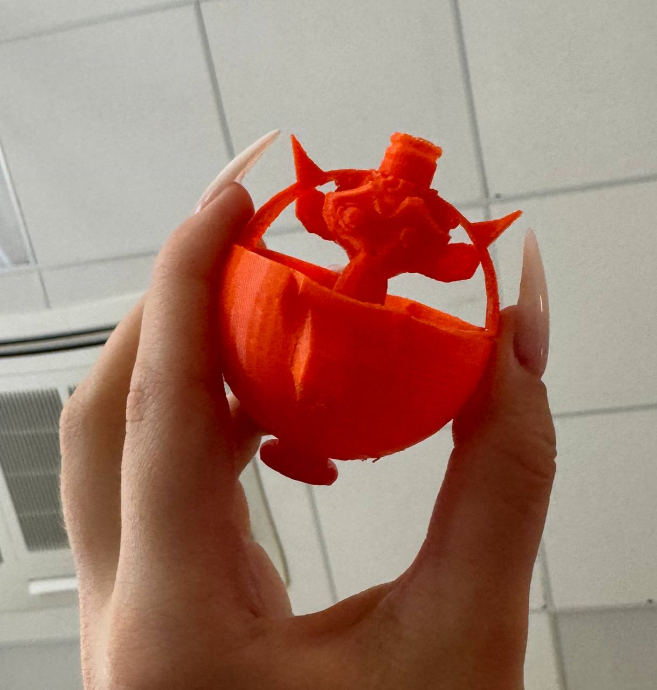
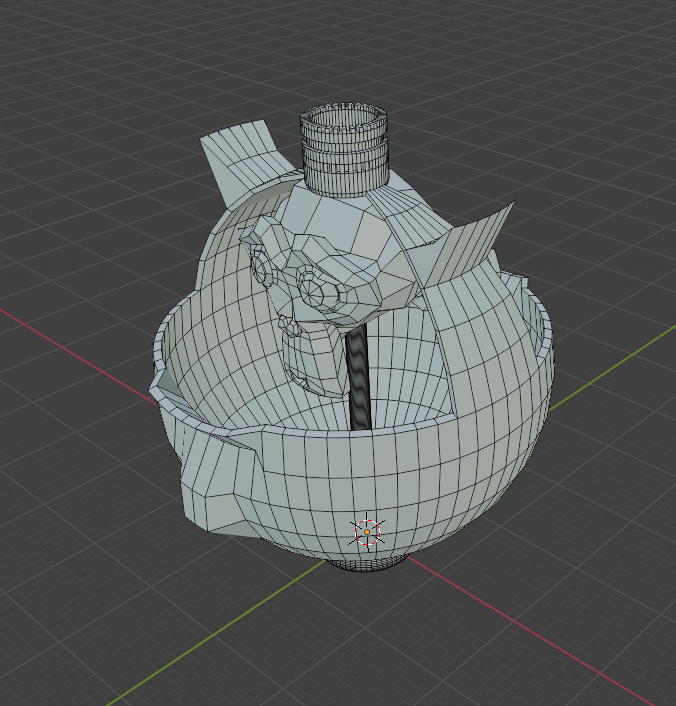
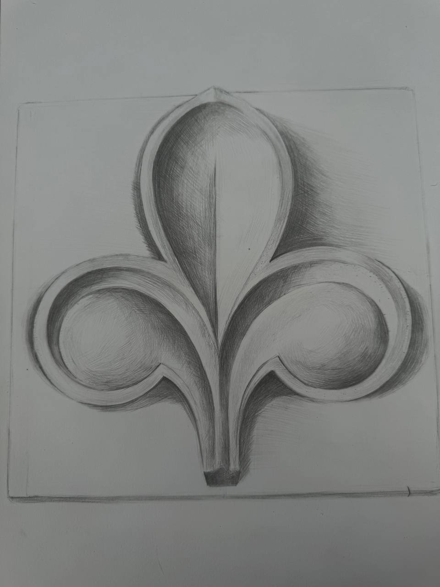
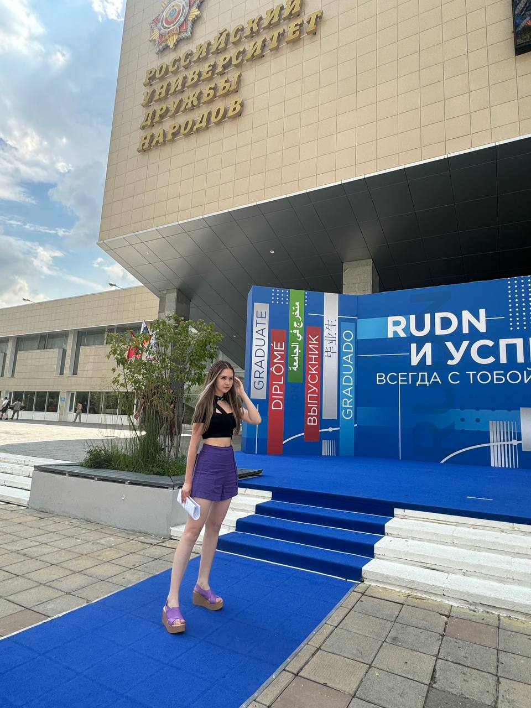

Ажурная ваза 'Король обезьян'
Желаете обрести милую вазу для вашего дома? Тогда Вы по адресу!



Внешний вид и плюсы вазы:
Преимущества проекта:
1) Моя цель — создать максимально удобную сортировку фруктов в вазе.
2) Также, показать плюсы ее внешнего вида. (Со стороны основания она выглядит обычной чашкой для хранения продуктов,
но обезьяна с короной из ручки добавляет вазе особый шарм и уникальность).
3) Данная ваза отлично украсит интерьер вашего дома и точно не останется без внимания гостей.
- Представьте себе: Вы устраиваете новоселье, приглашаете всех друзей, накрываете шикарный стол, по центру стоит милая корзинка с фруктами и притягивает взоры людей к себе.
Я уверена, что каждому будет приятно покушать сладких фруктов из подобной яркой емкости.
- Представленная ваза может быть выполнена в любой цветовой палитре, в оттенках классического красного,
синего и зеленого или же со смешением разных цветов или же вовсе может быть (по-желанию) можно создать каждый элемент разного цвета или вовсе радужный.
Характиристики
- Материал: пластик
- Cтрана производства: Российская Федерация
- Стоимость: 1000 рублей
Контакты: Хабибуллина Арина Рустамовна (темщица) +79121936532; telegram
НЕМНОГО ОБО МНЕ:
Мне 17 лет
Я поступила в РУДН
Я занимаюсь рисованием и планирую работать архитектором
У меня много друзей по всему миру
P.s: По всем вопросам обращайтесь ко мне


| Наши акции |
Льготы |
| Сыграйте в игру "Поймай обезьяну" и получи вазу абсолютно бесплатно! |
Пенсионерам, людям с ограниченными возможностями учитывается скидка 20% |